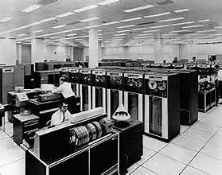

Beginnings of the Internet
The Internet began with ARPANET, funded by the U.S. Department of Defense. It was the first network to use the packet-switching technique, which allowed multiple computers to communicate on a single network. This innovation laid the groundwork for the Internet as we know it today.
In the early days, the Internet was primarily used by researchers and academics. However, as technology advanced and became more accessible, the Internet began to reach a broader audience. The introduction of user-friendly interfaces and web browsers further accelerated its growth.
Key Figures
- Vint Cerf: Known as one of the "Fathers of the Internet," he co-designed TCP/IP protocols.
- Tim Berners-Lee: Invented the World Wide Web in 1989.